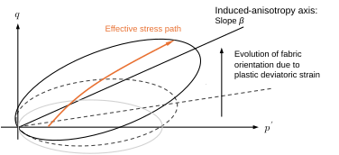
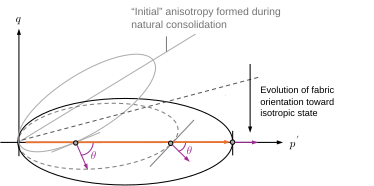
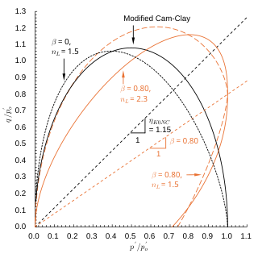

Ch3.2.5
Induced anisotropy
Anisotropic consolidation gives rise to what is termed induced anisotropy, which is distinct from the inherent anisotropy of soils (i.e., cross-anisotropic elasticity described in Chapter 3.1.1). Gens (1982) found that the effective stress path under undrained triaxial compression (UTC) is influenced by the preceding anisotropic loading. Zdravkovic and Jardin (2000) and Shibuya et al. (2003) conceptualised this as Local Boundary Surface (LBS). Similar behaviours were reported in, for instance, Mitachi and Kitago (1979).
Meanwhile, the yield surface and plastic potential for natural clays seems to be rotated toward the $K_0$ stress ratio $\eta_{Knc}$ due to the natural consolidation history as illustrated in Fig. 3.2.15. Such a rotation of plastic potential is associated with the evolution of the microscopic fabric orientation. In essence, LBS and rotational hardening represents the same underlying phenomenon. The laboratory isotropic consolidation, in turn, erases the anisotropy induced by natural consolidation (Fig. 3.2.16); Muraro and Jommi (2020) reported evidence of such a rotational hardening in a reconstituted peat subjected to the isotropic consolidation, highlighting the need for incorporating the induced anisotropy into modelling of peats.


Numerous rotational hardening models have been proposed (e.g., Ohta and Hata, 1971; Newson and Davies, 1996; Hashiguchi et al., 1996; Ohno et al., 2006; Dafalias and Taiebat, 2013; Sivasithamparam 2016). The present study adopts the following general form of the plastic potential function, modified after Ohno et al., 2006:
Here, $\beta$ represents the inclination of plastic potential, reflecting in-situ consolidation history, and $n_L$ is the exponent controlling the degree of distortion of its shape. The partial derivatives of the plastic potential are given as:
When $\beta=0$ and $n_L=2$, these expressions reduce to those of the Modified Cam-Clay model. The rotational hardening model accounts for an effective deviatoric state developed due to anisotropic consolidation, instead of the conventional stress ratio $\eta$:
When subjected to unloading or extension, a soil element may lie on the portion of plastic potential where $\eta^*<0$ (the conventional parameter $\eta$ is not allowed to take negative values in compressive conditions). In such a region, negative plastic deviatoric deformation develops, consistent with the direction of deviatoric stress change. Although increasing the number of model parameters seemingly complicates their determination, the model can still be constructed in a coherent and physically consistent manner, provided that parameters satisfy key conditions. The $K_0$ condition is one of them:
Given that the elasticity parameters $(\nu_{vh},\alpha)$, introduced in Chapter 3.1.1, the stress ratio parameters $(\eta_{Knc},M)$ and the elasto-plastic parameters $(\lambda^*,\kappa^*)$ are known, the remaining unknowns are $n_L$ and $\beta$. The rotational hardening parameter $\beta$ can be determined through triaxial probe, or alternatively back-estimated from isotropic compression tests, where the dilatancy $(\delta\varepsilon_d/\delta\varepsilon_v)$ on the isotropic compression path ($q=0$) is observed. Then, $n_L$ acts as an adjusting parameter to satisfy Eq. (3.2.56).
Equation (3.2.56) closes to this simpler expression in the isotropic limit ($\alpha\to1$, $\nu_{vh}\to\nu$). Fig. 3.2.17 shows the shape of plastic potentials expressed by Eq. (3.2.49), allowing parameters $(n_L,\beta,M)$ vary with $M$ approximately set to 2 (after the data on reconstituted peat: Muraro and Jommi, 2021). Despite differences in shape, all potential yield the same $K_0$ path ($\eta_{K_{0NC}}=1.15$). Consistent parameter determination across these deformation mechanisms constitutes the core of full-scale analysis.

Here, the evolution of fabric orientation is represented by the single parameter $\beta$, which is sufficient to describe cross-anisotropic conditions. Its tensor form for general stress conditions is available in Hashiguchi (1996). For general modelling, the evolution law for $\beta$ can be defined, often in association with plastic deviatoric deformation (simplified after Hashiguchi et al., 1996) as:
Here, $b_r$ is a material parameter governing the rate of rotational hardening, and $\beta_{lim}$ is the rotation limit. Although this evolution law is not considered in the present study, the rotated plastic potential is adopted to account for the $K_0$ consolidation history mainly in Chapter 8.